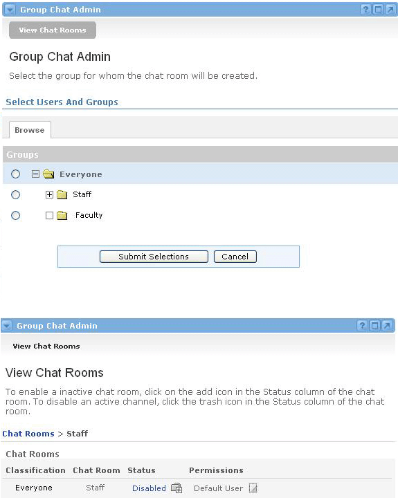

The Chat Admin channel allows a portal administrator to set up chat rooms for users within the community. The Chat Admin channel creates chat rooms for selected groups, and is used to define the permissions that each user or group has while in the chat room
Enabling a Chat Room
In order for users to join a chat room, it must first be enabled from within the Chat Admin channel. To do this, follow these steps:
- Locate the Group Chat Admin channel.
- Select the Group for which the chat room will be created.
- Click the + icon next to a group name to expand the list of groups.
- Check the radio button next to the desired group to enable a chat room or edit chat room privileges for that group.
- Click the Submit Selections button at the bottom of the channel.

You will now see a new screen where you will be able to either enable or disable the chat room. To enable it, click the Add icon next to the Disabled label. To disable it, click the Delete icon next to the Enabled label.